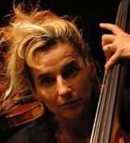
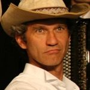
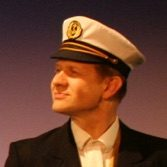
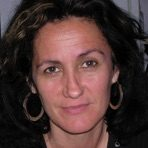
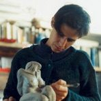

Im Projekt N!NA Theater hat sich eine Gruppe Kunstschaffender zusammengefunden, die die gleiche Vision von Theater verfolgen. Das Theater von N!NA besteht aus einer Kombination verschiedener Kunstsparten, dem Schauspiel, der Literatur, der Musik und der bildenden Kunst. Bei jeder Produktion wird das Verhältnis der verschiedenen Sparten neu ausbalanciert. Manchmal steht die Musik oder die Videokunst im Vordergrund wie z. B. beim Projekt Fluctus, ein anderes Mal sind der Text und das Spiel prägend, wie bei unserer neuesten Produktion: Airbnb. N!NA Theater ist professionelles Theater, das sich mit aktuellen Themen auseinandersetzt und doch publikumsnah bleibt. N!NA Theater ist an kein Spielhaus gebunden, geht in der ganzen Schweiz auf Tournee und kann gebucht werden.
Ein Ort der Utopie
Das Theater, das N!NA produziert, sucht in der Einfachheit seinen Reichtum. Es will nicht Bilder eintrichtern, sondern Imaginationen wachrufen. Es will keinen Platituden nacheifern, sondern die existentiellen Nöte der Menschen aufgreifen. Es will nicht predigen, sondern geistreich unterhalten. N!NA Theater ist ein Ort der Utopie; es entwirft ein leichteres, oftmals bunteres Anderswo. Thematisch beschäftigen wir uns mit aktuellen Themen und Autoren.
Musikalisch
Durch die Leidenschaft der Spieler für die Musik ist bei den Stücken von N!NA Theater die Musik nicht bloss akustische Untermalung, sondern nimmt eine tragende Rolle ein, indem sie strukturiert und verborgene Ebenen an die Oberfläche bringt. So wechseln die Spielerinnen je nach Stück fliessend zwischen Schauspiel und der Musik.
Mundart
N!NA Theater legt grossen Wert darauf, Professionalität mit Publikumsnähe zu verbinden. Die Stücke von N!NA werden deshalb in Mundart geschrieben und aufgeführt.
Unterwegs
Sämtliche Stücke von N!NA sind mobil, damit sie in verschiedenen Räumen – Kleintheater, Schulaulen, Kultur- und Gemeinschaftszentren – aufgeführt werden können. Die Stücke werden so ausgewählt, dass für die Besetzung nicht mehr als zwei bis vier SchauspielerInnen benötigt werden. Ein Stück bleibt jeweils drei bis vier Jahre im Repertoire. Gespielt wird vorwiegend in der Schweiz, einzelne Gastspiele im Ausland sind möglich.
Produktionsstätte und Büro
Produktionsstätte und Büroräume von N!NA Theater befinden sich in der Kulturwerkstatt Hagerhus, einer ehemaligen Papierfabrik in Bätterkinden, welche zu einem Kultur-, Wohn- und Arbeitszentrum umgebaut worden ist.
Die Kerngruppe von N!NA Theater

Franziska Senn
Spiel / Musik
Gründungsmitglied von NiNA Theater. Sie war engagiert in Saarbrücken, Freiburg i. Br., an den Stadttheatern Luzern und Bern. Von 1991–1996 war sie festes Ensemblemitglied am KITZ Junges Theater Zürich. Verschiedene Theaterprojekte führten sie nach Rio de Janeiro, Burkina Faso und Senegal. Danach gastierte sie drei Jahre lang am Jungen Theater in Wilhelmshaven (D). Sie spielt und inszeniert regelmässig Theater-Touren im Historischen Museum Luzern und ist im Kinderstück «Glücksvogel» von Theater Tabula Rasa zu sehen. Als Bassistin und Sängerin ist sie mit der Klezmergruppe «Chuzpe» unterwegs.

Reto Baumgartner
Spiel / Musik
Gründungsmitglied von NiNA Theater. Er war engagiert am Städtebundtheater Biel-Solothurn. Seit 1995 arbeitet er als freischaffender Schauspieler und Regisseur mit Engagements an verschiedenen Bühnen, u. a. am Jungen Theater in Wilhelmshaven (D), beim ehemaligen Ateliertheater Bern, beim KITZ Junges Theater Zürich, im Turbinetheater Langnau. Neben NiNA spielt er als festes Ensemblemitglied beim ForumTheater Zürich und er ist im «Pfannestil Chammer Sexdeet» zu sehen.

Ueli Blum
Regie / Text / Spiel / Musik
Gründungsmitglied von NiNA Theater. Seit 1986 arbeitete er als Regisseur,
Schauspieler, Dramaturg und Autor an verschiedenen Theatern (Stadttheater
Luzern, Landesbühne Niedersachsen Nord, claque in Baden, KITZ Junges Theater
Zürich, zamt&zunder, Theater Tabula Rasa, visch&fogel,
Schertenleib&Seele, Theatergesellschaft Stans und Willisau, Vorstadttheater
Basel etc.), beim Film und für das Fernsehen. Gleichzeitig unterrichtete er an
der Schauspielakademie in Zürich die Fächer Improvisation und Rollenstudium.
Von 1996–2000 war er künstlerischer Leiter des Jungen Theaters der Landesbühne
Niedersachsen Nord. Ueli Blum arbeitet regelmässig für Steiner Sarnen Schweiz
als Museumskonzepter.
www.ueliblum.ch

Valérie Soland
Ausstattung
Arbeitet seit ihrer Ausbildung an der «école des beaux-arts» in Sitten und der Kunstgewerbeschule in Zürich mit Drucken, Objekten und in letzter Zeit vornehmlich als Ausstatterin beim Theater sowie als Raumgestalterin für Events und Fachmessen. Unter anderem hat sie zusammengearbeitet mit dem Freilichttheater Aarburg, «Schertenleib&Seele» und dem NiNA Theater.

Marie Eve Mérillou
Ausstattung
Geboren 1968 in Paris, wo sie Sprache und Literatur studierte. Danach trat sie als Assistentin ins «Atelier P. Lebreton» (costumes d’époque) ein, wo sie in diversen Produktionen (Compagnie Renaud-Barrault, Galas Kersenty-Herbert, Opéra Garnier, Théâtre Mogador pour les «Misérables» etc.) mitarbeitete. Seit 1997 gastierte sie regelmässig als Ausstatterin an der Landesbühne Niedersachsen Nord und bei NiNA Theater. In ihrem Wohnsitz Bussana Vecchia (I) führt sie ein «Atelier de Sculpture» und eine Galleria «Terre Mu Tanti». Mit der Gruppe Fluido veranstaltet sie regelmässig Kunstaktionen.
Ehemalige Mitglieder und Personen, mit denen N!NA zusammengearbeitet hat
Adi Blum, Adrian Meyer, Albin Brun, Andi Hug, Andrea Schulthess, Andreas Schertenleib, Anna Maria Tschopp, Bernhard Steiner, Christine Wyss, Claudio Schenardi, Erich Adalbert Radke, Eva Katharina Batz-Deschler, Frank Fuhrmann, Georg Anderhub, Katie Luzie Stüdemann, Katrin Marti, Kurt Andreatta, Martin Brun, Martina Binz, Matthias Grupp, Pierre Kocher, Roli Kneubühler, Rüdiger Stephan, Ruth Schürmann, Sandra Moser, Serena Dankwa, Simon Ledermann, Thomas Griess, Trix Meier, Urs Amiet, Ute Reichmann, Werner Bodinek
Institutionen, mit denen N!NA zusammengearbeitet hat
Amt für Umweltschutz des Kantons Zug, ARA der Region Luzern, Blausee AG, Chäslager Stans, Historisches Museum Luzern, Hörmal Verlag, Jürg George Bürki Stiftung, Kleintheater Luzern, Krimitage Burgdorf, KreuzKultur Solothurn, Kulturwerkstatt Hagerhus, Landesbühne Niedersachsen Nord, Mulino Films / gruppo fluido, p&s netzwerk kultur, Pro Helvetia, Schultheatertage Solothurn, Steiner Sarnen Schweiz, Tojo Theater, Zusammenstoss